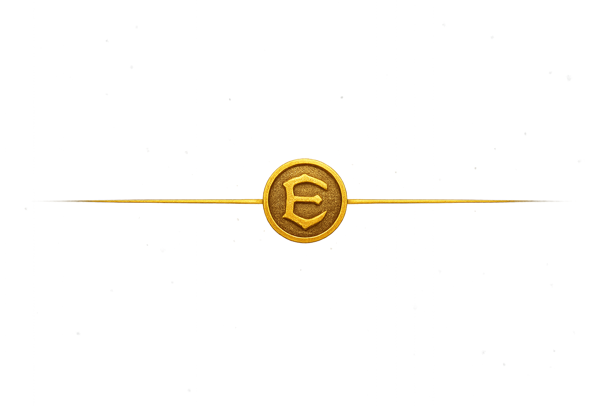

Allomancy
The metal-based magic system from the Mistborn series.
Allomancy in Action


How Allomancy Works
Allomancers ingest trace flakes of specific metals and “burn” them internally to unlock magical abilities. Each metal grants a unique effect—such as enhanced strength, emotional manipulation, or metal pushing.